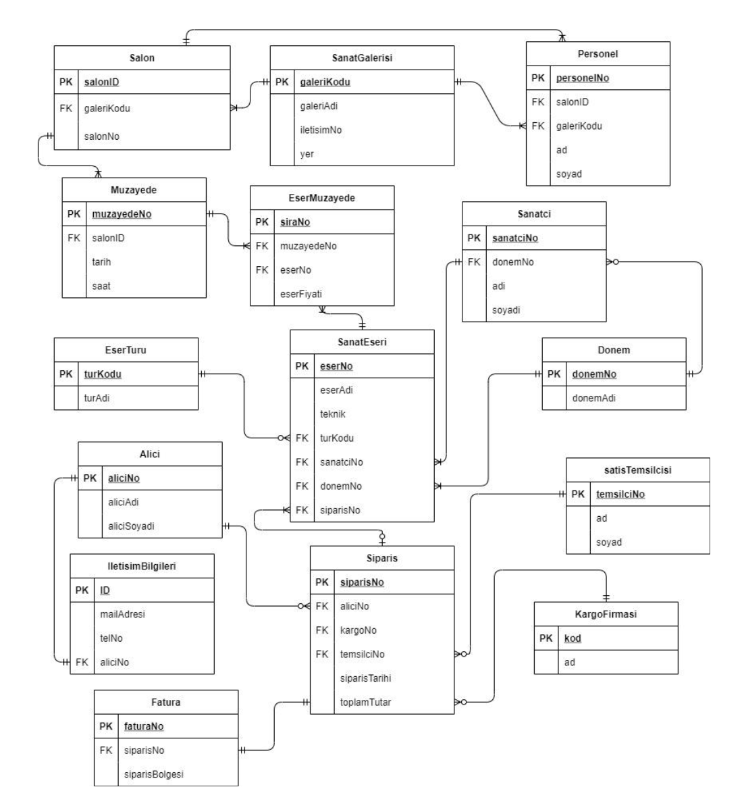

Database Management Systems Project
Project Overview
This project is developed for the Database Management Systems course and involves creating a software application with a self-chosen topic. The project includes designing and implementing a database, along with an application that interacts with this database. The application supports basic operations such as searching, adding, deleting, and updating records. I used PostgreSQL as the relational database management system.
• Gained experience in relational database design, SQL queries, and data manipulation within a real- world application context.